Los efectos que quedaron como finales en las rondas A/B/C, cada uno solo y capturado de la ROM real (sala de pruebas, enemigos quietos, 4×). Sirven de catálogo para decidir qué llevar al ARPG.
Auras de carga
Salen alrededor del héroe mientras carga el rayo. Cada una iba ligada a una reliquia y se podían apilar.
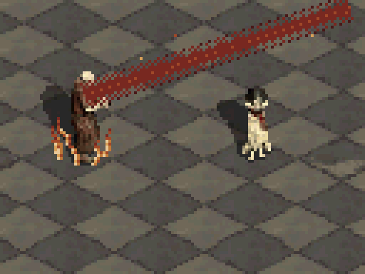
Corazón FlageladoLlamasLenguas de fuego alrededor del cuerpo mientras carga; luego dispara.En el juego solo salía con el disparo instantáneo pendiente; aquí está forzada para verla.ViáticoGloriaHalo luminoso que crece con la carga.
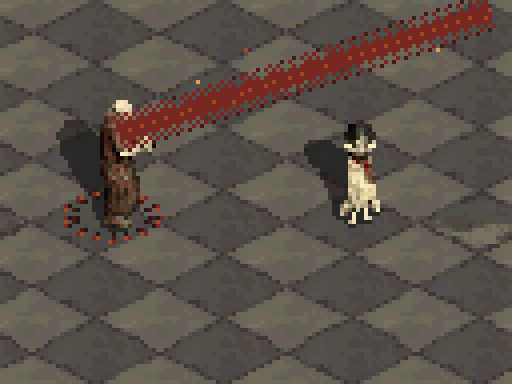
Aura de CilicioCorona de espinasAro de brasas a los pies que se ensancha con la carga y quema a quien entra.Sed de CenizaCenizaMotas de ceniza alrededor del héroe.Muy sutil: apenas se distingue de cargar sin aura.
El rayo
El arma del héroe: se carga y se suelta. Base sin reliquias y la línea de apuntado en llamas.
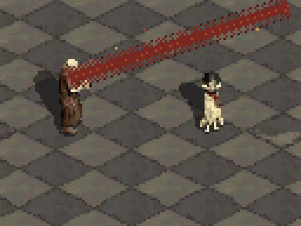
Sin reliquiaRayo baseLa línea de apuntado se estrecha mientras carga y sale el haz de fuego.
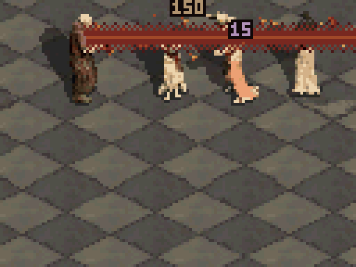
Llama Votiva · BLínea que ardeChispas que giran irregulares sobre la línea de apuntado y queman lo que toca.
Fuego en los enemigos
El estado de quemado y lo que pasa cuando el rayo o la muerte lo consumen.
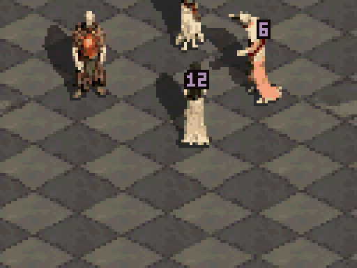
Quemado · BLlamas a los piesCorona de llamitas en el suelo; más capas, más llamas (1, 2 y 4 capas).
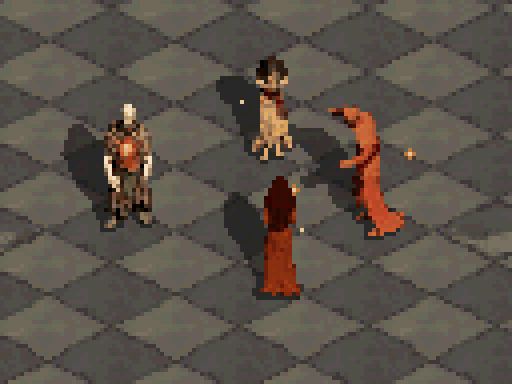
Quemado · ABrasas y lenguasBrasas que suben por el cuerpo y una lengua de fuego al tope de capas.
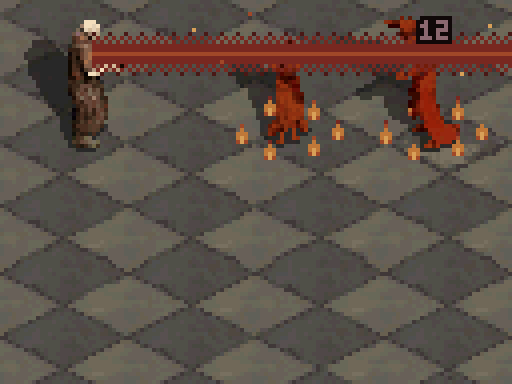
Auto de Fe · CLa llama se evaporaEl rayo golpea al quemado: hace el doble y la corona de los pies sube y se desvanece.
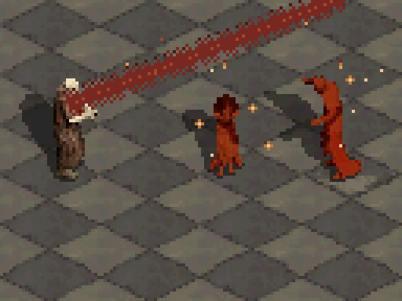
Auto de Fe · AChispas de impactoEstallido corto de chispas donde el rayo consume la quemadura.
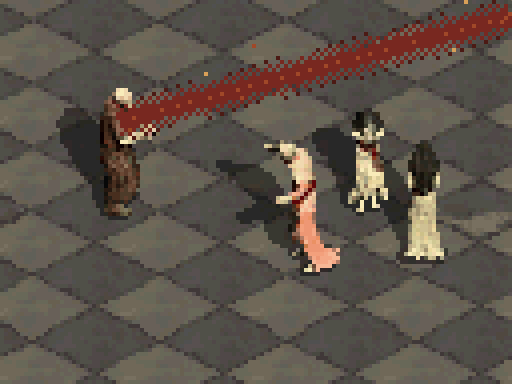
Martirio Contagioso · AEstallido contagiosoEl quemado muere, explota y el anillo prende a los de alrededor.
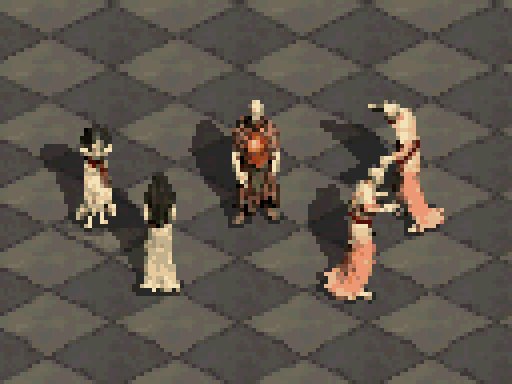
Corazón Flagelado · AOnda al recibir un golpeAnillo grande de fuego que sale del héroe y alcanza a los enemigos cercanos.
Sangre y vida
Reliquias del arquetipo Mártir: vivir con poca vida y robarla.
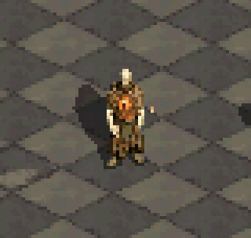
Llaga Abierta · BAscendido que sangraBrillo pálido dorado y sangre que gotea; más fuerte cuantos menos corazones (de 4 a 1).
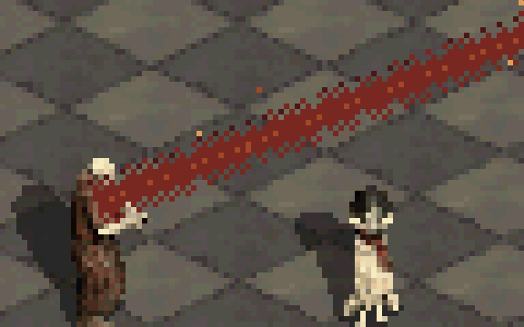
Viático · AHilo de sangreAl matar, un hilo rojo viaja en arco desde la víctima al pecho del héroe.
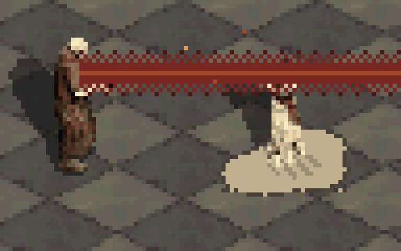
Viático · C (alternativa)Alma pálidaLa misma idea con un alma clara en lugar de sangre.